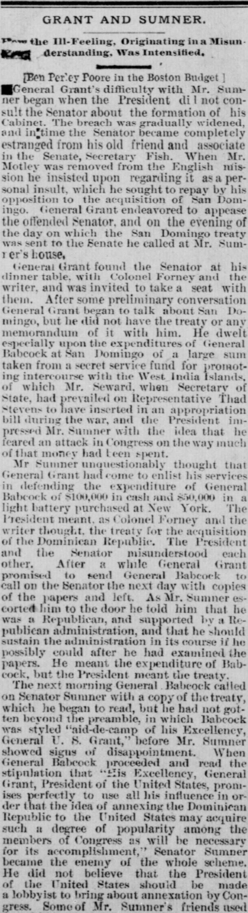
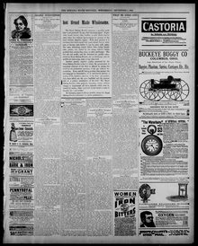

See the full pageVer la página completaMr Sumner uiiuuestioiiHbly thought that Ueneral (.rant had come to enlistEl Sr. Sumner, indudablemente, pensó que el general Grant había venido a conseguir
The newspaper reported that President Grant and Senator Sumner misunderstood each other during a meeting, with Sumner believing the President wanted him to defend General Babcock's financial expenditures while the President intended to discuss the treaty for acquiring the Dominican Republic. The following morning, General Babcock visited Senator Sumner with a copy of the treaty, which included a stipulation detailing President Grant's promise to use his influence to make the annexation of the Dominican Republic popular among members of Congress.El rotativo dio cuenta de que el presidente Grant y el senador Sumner sufrieron un equívoco mutuo durante una conferencia, creyendo Sumner que el mandatario pretendía que justificara los gastos reservados del general Babcock, mientras el presidente buscaba tratar el convenio de incorporación de la República Dominicana. A la mañana siguiente, el general Babcock visitó a Sumner con una copia del documento, en el cual figuraba una cláusula que obligaba a Grant a emplear su influencia personal para popularizar la anexión de la República Dominicana entre los legisladores.
FULL TEXT:TRADUCCIÓN:
GRANT AND SUMNER.GRANT Y SUMNER.
How the Ill-Feeling, Originating in a Misunderstanding, Was Intensified.Cómo el mal sentimiento, originado en un malentendido, fue intensificado.
[Ben Perley Poore in the Boston Budget][Ben Perley Poore en el Boston Budget]
General Grant's difficulty with Mr. Sumner began when the President did not consult the Senator about the formation of his Cabinet. The breach was gradually widened, and in time the Senator became completely estranged from his old friend and associate in the Senate, Secretary Fish. When Mr. Motley was removed from the English mission he insisted upon regarding it as a personal insult, which he sought to repay by his opposition to the acquisition of San Domingo. General Grant endeavored to appease the offended Senator, and on the evening of the day on which the San Domingo treaty was sent to the Senate he called at Mr. Sumner's house.La dificultad del general Grant con el Sr. Sumner comenzó cuando el Presidente no consultó al Senador sobre la formación de su Gabinete. La brecha fue gradualmente ensanchándose, y con el tiempo el Senador se alejó completamente de su viejo amigo y asociado en el Senado, el Secretario Fish. Cuando el Sr. Motley fue removido de la misión en Inglaterra insistió en considerarlo como un insulto personal, que buscó repagar con su oposición a la adquisición de Santo Domingo. El general Grant se esforzó por apaciguar al Senador ofendido, y en la noche del día en que el tratado de Santo Domingo fue enviado al Senado llamó a la casa del Sr. Sumner.
General Grant found the Senator at his dinner table, with Colonel Forney and the writer, and was invited to take a seat with them. After some preliminary conversation General Grant began to talk about San Domingo, but he did not have the treaty or any memorandum of it with him. He dwelt especially upon the expenditures of General Babcock at San Domingo of a large sum taken from a secret service fund for promoting intercourse with the West India Islands, of which Mr. Seward, when Secretary of State, had prevailed on Representative Thad Stevens to have inserted in an appropriation bill during the war, and the President impressed Mr. Sumner with the idea that he feared an attack in Congress on the way much of that money had been spent.El general Grant encontró al Senador en su mesa de cena, con el coronel Forney y el escritor, y fue invitado a tomar asiento con ellos. Después de alguna conversación preliminar el general Grant comenzó a hablar sobre Santo Domingo, pero no tenía el tratado ni memorándum alguno de él consigo. Se detuvo especialmente en los gastos del general Babcock en Santo Domingo de una gran suma tomada de un fondo del servicio secreto para promover el comercio con las Islas de las Indias Occidentales, que el Sr. Seward, cuando era Secretario de Estado, había persuadido al Representante Thad Stevens de insertar en un proyecto de asignaciones durante la guerra, y el Presidente impresionó al Sr. Sumner con la idea de que temía un ataque en el Congreso sobre la manera en que mucho de ese dinero había sido gastado.
Mr Sumner unquestionably thought that General Grant had come to enlist his services in defending the expenditure of General Babcock of $100,000 in cash and $50,000 in a light battery purchased at New York. The President meant, as Colonel Forney and the writer thought, the treaty for the acquisition of the Dominican Republic. The President and the Senator misunderstood each other. After a while General Grant promised to send General Babcock to call on the Senator the next day with copies of the papers and left. As Mr. Sumner escorted him to the door he told him that he was a Republican, and supported by a Republican administration, and that he should sustain the administration in its course if he possibly could after he had examined the papers. He meant the expenditure of Babcock, but the President meant the treaty.El Sr. Sumner indudablemente pensó que el general Grant había venido a enlistar sus servicios en la defensa del gasto del general Babcock de $100,000 en efectivo y $50,000 en una batería ligera comprada en Nueva York. El Presidente se refería, como el coronel Forney y el escritor pensaron, al tratado para la adquisición de la República Dominicana. El Presidente y el Senador se malentendieron mutuamente. Después de un rato el general Grant prometió enviar al general Babcock a visitar al Senador al día siguiente con copias de los documentos y se fue. Mientras el Sr. Sumner lo acompañaba a la puerta le dijo que era un Republicano, y apoyado por una administración Republicana, y que sostendría a la administración en su curso si posiblemente pudiera después de haber examinado los documentos. Se refería al gasto de Babcock, pero el Presidente se refería al tratado.
The next morning General Babcock called on Senator Sumner with a copy of the treaty, which he began to read, but he had not gotten beyond the preamble, in which Babcock was styled "aid-de-camp of his Excellency, General U. S. Grant," before Mr. Sumner showed signs of disappointment. When General Babcock proceeded and read the stipulation that "His Excellency, General Grant, President of the United States, promises perfectly to use all his influence in order that the idea of annexing the Dominican Republic to the United States may acquire such a degree of popularity among the members of Congress as will be necessary for its accomplishment," Senator Sumner became the enemy of the whole scheme. He did not believe that the President of the United States should be made a lobbyist to bring about annexation by Congress.A la mañana siguiente el general Babcock visitó al Senador Sumner con una copia del tratado, que comenzó a leer, pero no había pasado del preámbulo, en el que Babcock era intitulado «edecán de su Excelencia, el general U. S. Grant», antes de que el Sr. Sumner mostrara signos de decepción. Cuando el general Babcock procedió y leyó la estipulación de que «Su Excelencia, el general Grant, Presidente de los Estados Unidos, promete perfectamente usar toda su influencia a fin de que la idea de anexar la República Dominicana a los Estados Unidos adquiera tal grado de popularidad entre los miembros del Congreso como será necesaria para su logro», el Senador Sumner se convirtió en enemigo de todo el plan. No creía que el Presidente de los Estados Unidos debiera ser hecho un cabildero para lograr la anexión por el Congreso.
The Indiana State Sentinel. Indianapolis, September 2, 1885. Page 5.